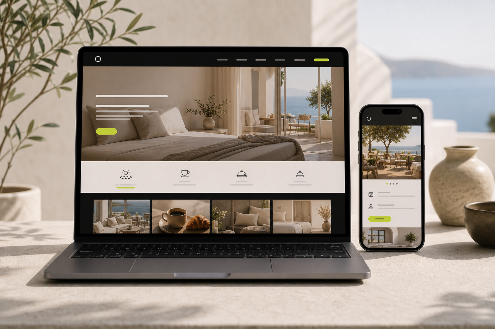

Discovery
Understand goals, audience, existing assets, constraints, and what the project must achieve.
Process
Clients should never feel lost in the middle of a website, system, or AI build. The process keeps communication, decisions, and launch checks visible.
Start the planner Direction
Direction
DesignLaunchUnderstand goals, audience, existing assets, constraints, and what the project must achieve.
Shape scope, sitemap, features, content needs, design references, and a practical delivery plan.
Create the visual system, key pages, responsive behavior, and conversion-focused UI patterns.
Develop the website, app, booking flow, automation, or AI integration with focused QA along the way.
Check forms, responsive layouts, performance, SEO basics, accessibility basics, analytics, and deployment.
Plan updates, maintenance, improvements, and future feature growth after the first release.
Communication
The working model keeps fewer layers. The project still gets structure through written direction, check-ins, decisions, and launch criteria.
Clarify what exists, what is missing, and what the project is meant to change.
Review decisions in stages so feedback happens while it is still useful.
Move through a practical release checklist before the site or system goes live.
Use maintenance or growth work to keep improving instead of letting the project sit still.
Start a project
Use the planner to give the project a better starting point.
Studio overview
Made to Scale is built for direct communication, careful execution, and practical support after launch.